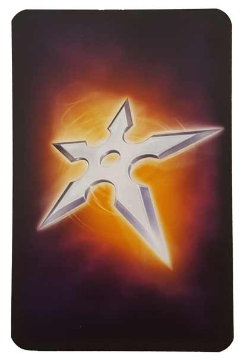

In this The Mind review, D and Will break down the 2018 Spiel des Jahres nominated card game from designer Wolfgang Warsch. In this game, players attempt to play numbered cards in ascending order without speaking or gesturing to each other. Each mistake costs the players a life, and if they run out of lives, the game ends. To aid them along the way, the players have access to a number of throwing stars that can be utilized to remove the lowest numbered card remaining in their hands. So, did The Mind earn its plaudits? Continue reading below to find out.
D reviews The Mind
 (Author’s
note: this review is meant to accompany our gameplay video and will not
go in-depth on the game’s rules. If you’re interested in learning how
the game is played, please watch the video. It’s not bad.)
(Author’s
note: this review is meant to accompany our gameplay video and will not
go in-depth on the game’s rules. If you’re interested in learning how
the game is played, please watch the video. It’s not bad.)
I’ll admit that I bought The Mind because of the hype surrounding it. Its premise, involving some sort of pseudo-mind meld among its players, sounded bizarre and almost mystical. And of course, it has that Spiel des Jahres nomination that’s always such a big deal. I don’t put much stock in awards of any kind, but as someone who likes to be in the loop when it comes to board games, ignoring major releases would be irresponsible of me. So, I didn’t necessarily buy it out of a burning desire to play it. And now that I have played it, I am – ironically, I suppose – of two minds when it comes to The Mind. Part of me wants to shred it to pieces for barely being a game. The other part of me thinks it’s pretty fun and wants to go back to beat it. So overall, I guess my final opinion on the game is somewhere in the middle. Seeing as how this is a review, I guess I should probably elaborate on these feelings.
So, let’s start with this whole “barely a game” stuff. It’s hard to really argue against that. Sometimes you play a game that’s so simple that you say to yourself, “why didn’t I think of that”? This is not one of those games. This is a game where it’s so simple that say to yourself, “I can’t believe this even got published”. It’s not even particularly clever – you just try to play cards in the right order without communicating. It’s like a physical version of people on message boards trying to count to ten, one post at a time. All that the game provides is some basic rules so that’s there’s a limit on how many tries you get. You don’t even need to buy The Mind to play The Mind. This is sort of a board game industry faux pas, probably, but it’s true. Find the rules online, get yourself some flash cards and a marker, and after maybe 20 minutes of work you’ll have everything you need to play this game. And yet, despite all of this, I can’t hate it. There’s something there that works – at least I think so. The whole game sort of feels like a trick of some kind and maybe my fondness for it is as well.
Perhaps it’s that mild framework that the rules provide that makes things tolerable. The Mind is hard but never too frustrating, mainly thanks the limits put in place. Lives and throwing stars are usually in short supply, so you have to play well to win, but the ability to earn new ones after completing levels keeps you engaged and always makes the game feel winnable. These rules and the set number of levels, tailored to the player count, put a reasonable and necessary time limit on the game. I could imagine a homemade version of The Mind without all of these accoutrements that would feel pointless and interminable. And the choice to use a hundred cards seems to work well, also. Success at the game still requires a great deal of luck, of course, but I don’t feel like I’ve been cheated too many times, and I think that comes down to there being enough cards to keep things honest. On the flip-side, having too many cards would make the game too easy and also unruly. There’s already a lot of shuffling.
The Mind has one other thing going for it that I haven’t touched on yet. At a glance, or maybe after one or two plays, the game might feel like it’s a complete crap shoot. No one has psychic powers (this is not up for debate), so how could anyone actually get good at this game? But a funny thing happens if you keep playing it enough with the same people. I think our video might be some good evidence of this. Graham and I have played this game together a bunch without Will. And interestingly enough, Graham and I seem to have developed a sort of chemistry that Will, through no fault of his own, does not share. It’s not about being a psychic, of course, but rather forming a familiarity with another person’s habits. Some are more aggressive than others, so knowing what a pause of a certain length means is crucial. My evidence is not extensive, but it really feels like playing with the same group repeatedly leads to better results over time. So, you’ll probably struggle the first time you play. But practice actually seems to help, which surprised and impressed me.
Overall, I can’t give a game like The Mind the highest of marks, but it really is more credible than it might seem before you try it. It’s proven pretty popular with some non-enthusiasts we’ve played with as well, so if you’re looking for a game that’s somewhat unique and good at parties without being a “party game”, you should consider The Mind. Is it “Game of the Year” caliber? No, I don’t think so. But is it worth playing? Certainly.
D’s Rating: Three and One-Half Stars out of Five.
Will reviews The Mind
 Reviewing a game like The Mind is like reviewing Uno – they’re both so simple that it’s almost pointless to analyze them too closely. To give you an idea of how simple The Mind is,
I’ll point out that I was actually able to pretty much figure out the
gameplay from the components alone, without any prior knowledge of the
rules. This was back when I first saw the game after it was nominated
for the 2018 Spiel Des Jahres award, an achievement I’m still a little
perplexed by. That’s not to say that The Mind isn’t fun or
worthy of awards, but Game of the Year? I don’t know about that. This
game is definitely addictive and enjoyable in the moment, but the
overall experience of playing it is kind of unremarkable.
Reviewing a game like The Mind is like reviewing Uno – they’re both so simple that it’s almost pointless to analyze them too closely. To give you an idea of how simple The Mind is,
I’ll point out that I was actually able to pretty much figure out the
gameplay from the components alone, without any prior knowledge of the
rules. This was back when I first saw the game after it was nominated
for the 2018 Spiel Des Jahres award, an achievement I’m still a little
perplexed by. That’s not to say that The Mind isn’t fun or
worthy of awards, but Game of the Year? I don’t know about that. This
game is definitely addictive and enjoyable in the moment, but the
overall experience of playing it is kind of unremarkable.
If you don’t already know, the crux of The Mind’s gameplay is that you play numbered cards in ascending order without communicating or gesturing to whomever you’re playing with. In other words, it’s a game of trust and controlled chaos. This core gameplay loop is indeed satisfying, although not immediately. Regardless of how close you are to the person / people you play it with, your first handful of sessions are going to go poorly. However, after those growing pains subside, you’ll find yourself connecting mentally with your friends in a way that, at least for me, is both surprising and sort of fascinating. If I had to describe it, I’d say it’s a lot like the experience of playing Poker, in that you’ll pick up on the tells of the folks you play it with. Once you do that, you can anticipate their next move. With The Mind, that means, for instance, you’ll learn that if someone hesitates for more than 15-20 seconds, you probably have a lower card than they do. When you make these inferences and are right, the resulting feeling is not only terrific, but also pretty memorable.
What I just described is the best part of The Mind experience, but it also highlights the game’s biggest weakness – people are what make this game; not the game itself. To put it differently, the fun-level of a session of The Mind is determined not by the gameplay itself, but by whom you experience it with. If you took this game to your FLGS and played it with a couple of strangers, sure it might be kind of cool. But most likely, your lack of knowledge in regards to how those people play will spoil the enjoyment a bit. Alternatively, if you play this game with a group of close friends, you’ll almost definitely find the experience to be pretty redeemable, since you at least know their habits and patterns. Regardless of whom you play The Mind with, its core rules are objectively bland. This means that if your group has no rapport and can’t add anything to the gameplay, then it basically stinks.
Though, I should commend Wolfgang Warsch, the designer, for throwing in the life and throwing star cards. Life cards are admittedly a no brainer, given that without them, most sessions of The Mind would only last 3-4 rounds at most. The throwing star cards are a bit cleverer, providing crunchy little moments of strategy where there otherwise wouldn’t be any. The debates over when to use the throwing stars were the most heated instances in our sessions, and misusing them can lead to heartbreaking moments. I should point out – in no way does this game have a martial arts / ninja-theme. This makes the decision to incorporate “throwing stars” into the game rather confusing, but then again, who doesn’t like shurikens?
The Mind’s lack of theme brings me back around to my original point – this game is kind of unremarkable. I’m not saying that it needed a theme though, and I definitely understand that any theme here would’ve just felt tacked on, so bravo again to the designer for another savvy decision. All in all, how much you get out of The Mind depends heavily on whom you play it with, given that the gameplay and rules are so simple. I must admit – I do admire Wolfgang Warsch for creating something that requires so much trust between friends to play. That was a bold decision, and I think it mostly paid off. I just wish there was a little bit more… game to this game. I guess that’s why I’m so shocked it was nominated for such prestigious awards. Yes, The Mind has its merits, but I’m just not sure there’s enough of them.
I give The Mind a: C+
The Mind – Board Crazy’s Ratings

Leave a Reply
You must be logged in to post a comment.